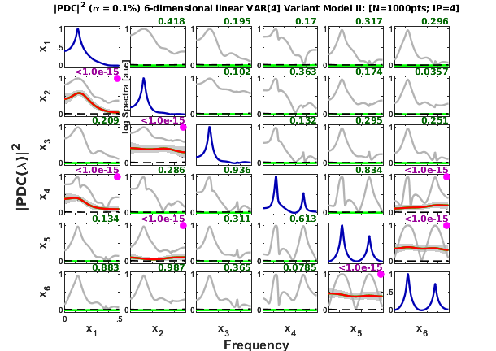

Baccala & Sameshima (2001b) 6-dimensional VAR[4] Scalp Model II variant
Description:
Variant of model borrowed from Baccala & Sameshima. Overcoming the limitations of correlation analysis for many simultaneously processed neural structures, Progress in Brain Research, 130:33--47, 2001.
http://dx.doi.org/10.1016/S0079-6123(01)30004-3
6-dimensional VAR(4) Scalp variant Model II
Contents
Data sample generation
clear; clc; format compact; format short nDiscard = 5000; % number of points discarded at beginning of simulation nPoints = 1000; % number of analyzed samples points N=nDiscard+nPoints; % number of simulated points u = fbaccala2001b_model2_variant( nPoints, nDiscard ); [nSegLength,nChannels]=size(u); chLabels = []; % or %chLabels = {'x_1';'x_2';'x_3';'x_4';'x_5';'x_6'}; fs = 200;
======================================================================
Linear VAR[4] Variant Model II
Baccala & Sameshima. Prog Brain Research, 130:33--47, 2001.
x1==>x2 x1==>x4 x2==>x3 x2-->x5 x5==>x6 x6-->x4 x6==>x5
======================================================================
Interaction diagram
Figure 2a from Baccala & Sameshima. Biol. Cybern. 84:463-474, 2001.
Equation
Data pre-processing: detrending and normalization options
flgDetrend = 1; % Detrending the data set flgStandardize = 0; % No standardization [nChannels,nSegLength] =size(u); if nChannels > nSegLength, u = u.'; [nChannels,nSegLength]=size(u); end; if flgDetrend, for i=1:nChannels, u(i,:)=detrend(u(i,:)); end; disp('Time series were detrended.'); end; if flgStandardize, for i=1:nChannels, u(i,:)=u(i,:)/std(u(i,:)); end; disp('Time series were scale-standardized.'); end;
Time series were detrended.
MVAR model estimation
maxIP = 30; % maximum model order to consider. alg = 1; % 1: Nutall-Strand MVAR estimation algorithm criterion = 1; % 1: AIC, Akaike Information Criteria disp('Running MVAR estimation routine.') [IP,pf,A,pb,B,ef,eb,vaic,Vaicv] = mvar(u,maxIP,alg,criterion); disp(['Number of channels = ' int2str(nChannels) ' with ' ... int2str(nSegLength) ' data points; MAR model order = ' int2str(IP) '.']);
Running MVAR estimation routine. maxOrder limited to 30 IP=1 vaic=47531.589074 IP=2 vaic=42000.763057 IP=3 vaic=41639.165877 IP=4 vaic=41530.353849 IP=5 vaic=41566.996300 Number of channels = 6 with 1000 data points; MAR model order = 4.
Testing for adequacy of MAR model fitting through Portmanteau test
h = 20; % testing lag MVARadequacy_signif = 0.05; % VAR model estimation adequacy significance % level aValueMVAR = 1 - MVARadequacy_signif; % Confidence value for the testing flgPrintResults = 1; [Pass,Portmanteau,st,ths] = mvarresidue(ef,nSegLength,IP,aValueMVAR,h,... flgPrintResults);
====================================================================================================
MVAR RESIDURES TEST FOR WHITENESS
----------------------------------------------------------------------------------------------------
Good MAR model fitting! Residues white noise hypothesis NOT rejected.
Pass = 0.0277778
st = 540.398
Granger causality test (GCT) and instantaneous GCT
gct_signif = 0.001; % Granger causality test significance level igct_signif = 0.001; % Instantaneous GCT significance level metric = 'euc'; % euc = original PDC or DTF; % diag = generalized PDC (gPDC) or DC; % info = information PDC (iPDC) or iDTF. flgPrintResults = 1; [Tr_gct, pValue_gct, Tr_igct, pValue_igct] = gct_alg(u,A,pf,gct_signif, ... igct_signif,flgPrintResults);
====================================================================================================
GRANGER CAUSALITY TEST
----------------------------------------------------------------------------------------------------
Connectivity matrix:
NaN 0 0 0 0 0
1 NaN 0 0 0 0
0 1 NaN 0 0 0
1 0 0 NaN 0 1
0 1 0 0 NaN 1
0 0 0 0 1 NaN
Granger causality test p-values:
NaN 0.8216 0.1912 0.7953 0.3156 0.6175
0 NaN 0.8846 0.0939 0.8695 0.6397
0.9978 0 NaN 0.8995 0.8513 0.6559
0 0.9298 0.3152 NaN 0.3604 0
0.0454 0 0.6622 0.7642 NaN 0
0.7311 0.5938 0.2741 0.0332 0 NaN
Elapsed time is 0.011262 seconds.
====================================================================================================
INSTANTANEOUS GRANGER CAUSALITY TEST
----------------------------------------------------------------------------------------------------
Instantaneous connectivity matrix:
NaN 0 0 0 0 0
0 NaN 0 0 0 0
0 0 NaN 0 0 0
0 0 0 NaN 0 0
0 0 0 0 NaN 0
0 0 0 0 0 NaN
Instantaneous Granger Causality test p-values:
NaN 0.2470 0.0581 0.0018 0.2547 0.0937
0.2470 NaN 0.7041 0.5526 0.1091 0.9285
0.0581 0.7041 NaN 0.7122 0.9619 0.2441
0.0018 0.5526 0.7122 NaN 0.6206 0.3697
0.2547 0.1091 0.9619 0.6206 NaN 0.0034
0.0937 0.9285 0.2441 0.3697 0.0034 NaN
>>>> Instantaneous Granger Causality NOT detected.
====================================================================================================
Elapsed time is 0.037558 seconds.
Original PDC estimation
PDC analysis results are saved in c structure. See asymp_pdc.m or issue
>> help asymp_pdc
command for more detail.
nFreqs = 128;
alpha = 0.001;
c = asymp_pdc(u,A,pf,nFreqs,metric,alpha); % Estimate PDC and asymptotic statistics
$|PDC(\lambda)|^2 Matrix Layout Plotting
flgPrinting = [1 1 1 2 2 1 5]; % overriding default setting flgColor = 0; w_max=fs/2; strTitle1 = ['6-dimensional linear VAR[4] Variant Model II: ']; strTitle2 = ['[N=' int2str(nSegLength) 'pts; IP=' int2str(c.p) '; ' ... datestr(now) ']']; strTitle =[strTitle1 strTitle2]; % h=figure; % set(h,'NumberTitle','off','MenuBar','none', ... % 'Name', 'Baccala & Sameshima (2001) Model II Variant') strTitle = 'Baccala & Sameshima (2001) Model II Variant'; [hxlabel hylabel] = xplot(strTitle,c,... flgPrinting,fs,w_max,chLabels,flgColor,2,'all'); xplot_title(alpha,metric,'pdc', strTitle); % [ax,hT]=suplabel( strTitle, 't' ); % set(hT,'FontSize',10) % %% Generalized PDC estimation % % % % PDC analysis results are saved in *d* structure. % % See asymp_pdc.m or issue % % % % >> help asymp_pdc % % % % command for more detail. % nFreqs = 128; % metric = 'info'; % alpha = 0.01; % d = asymp_pdc(u,A,pf,nFreqs,metric,alpha); % Estimate PDC and asymptotic statistics % % %% % % PDCn Matrix Layout Plotting % % flgPrinting = [1 1 1 2 2 0 2]; % flgColor = [1]; % w_max=fs/2; % flgScale = 2; % y-axis = [0 1] % flgMax = 'TCI'; % flgSignifColor = 3; % red = significant, gree = nonsignificant % % for kflgColor = flgColor, % % h=figure; % % set(h,'NumberTitle','off','MenuBar','none', ... % % 'Name', 'Baccala & Sameshima (2001) Model II Variant') % % strTitle = 'Baccala & Sameshima (2001) Model II Variant'; % [hxlabel,hylabel] = xplot(strTitle,d,flgPrinting,fs,w_max,chLabels, ... % kflgColor,flgScale,flgMax,flgSignifColor); % xplot_title(alpha,metric, 'pdc', ... % ['Linear model ' int2str(nPoints) ' data points.']); % % % [ax,hT]=suplabel(['Linear model ' ... % % int2str(nPoints) ' data points.'],'t'); % % set(hT,'FontSize',10); % Title font size % % end; % % % %% Generalized DTF = DC estimation % % % % DC analysis results are saved in *e* structure. % % See asymp_pdc.m or issue % % % % >> help asymp_pdc % % % % command for more detail. % nFreqs = 128; % metric = 'info'; % alpha = 0.01; % e = asymp_dtf(u,A,pf,nFreqs,metric,alpha); % Estimate PDC and asymptotic statistics % % %% % % PDCn Matrix Layout Plotting % % flgPrinting = [1 1 1 2 2 1 2]; % flgColor = [0]; % w_max=fs/2; % flgScale = 1; % y-axis = [0 1] % flgMax = 'TCI'; % flgSignifColor = 3; % red = significant, gree = nonsignificant % for kflgColor = flgColor, % % h=figure; % % set(h,'NumberTitle','off','MenuBar','none', ... % % 'Name', 'Baccala & Sameshima (2001) Model II Variant') % % strTitle = 'Baccala & Sameshima (2001) Model II Variant'; % [hxlabel,hylabel] = xplot(strTitle,e,flgPrinting,fs,w_max,chLabels, ... % kflgColor,flgScale,flgMax,flgSignifColor); % % id = ['Linear model ' int2str(nPoints) ' data points.']; % xplot_title(alpha,metric,'dtf',id); % % [ax,hT]=suplabel(['Linear model ' ... % % int2str(nPoints) ' data points.'],'t'); % % set(hT,'FontSize',10); % Title font size % % end;